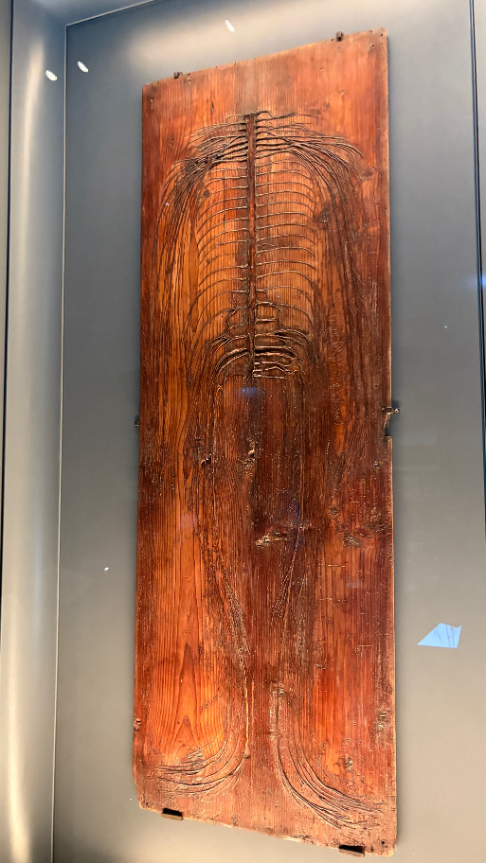
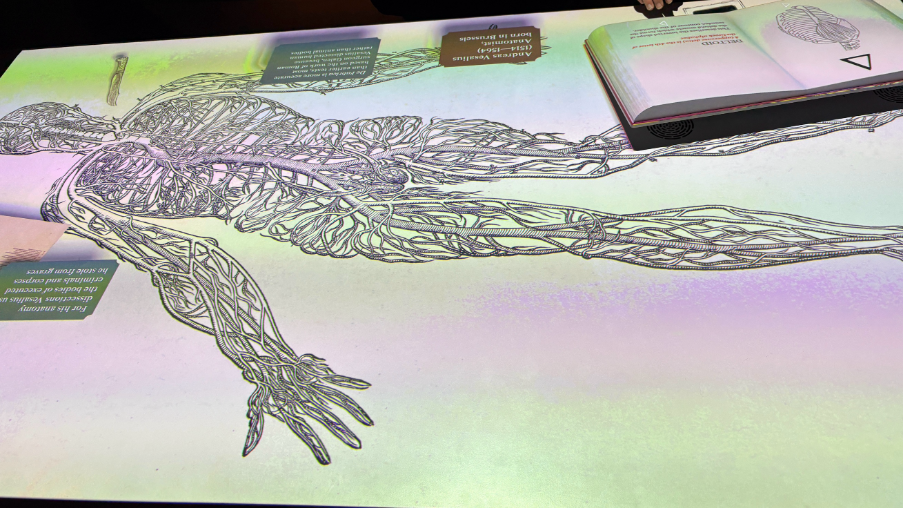
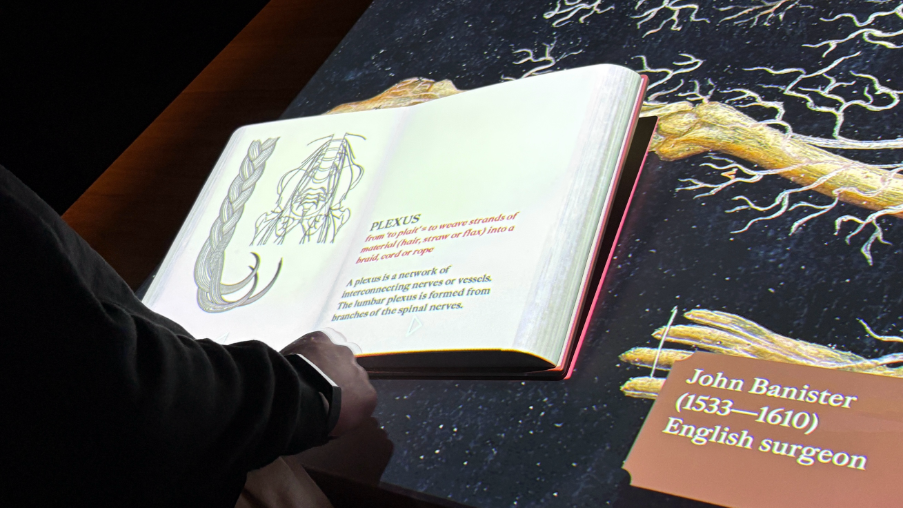
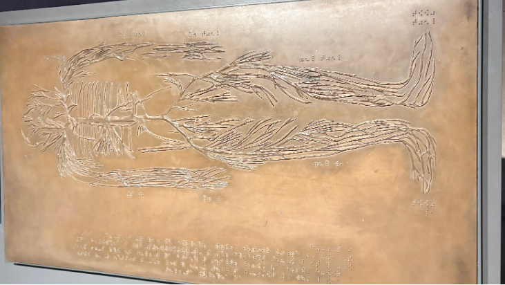

This week I visited the Hunterian Museum in London and encountered a particularly thought-provoking interactive installation in the exhibition. It combines traditional medical anatomy displays with new media projection technology, offering visitors an immersive, touchable experience that’s educational and inclusive. This isn’t just a technical “interactive work” it also made me rethink the relationships between knowledge dissemination, physical perception, and accessibility.

The installation features a large projection plane that displays a real-time image of the human nervous system (or meridian system). In the corner beside it, there’s a three-dimensional book model with a projected page-turning interface each page presents knowledge about the human nerves, such as what a “Plexus” is and how it functions.

What’s more interesting is that this book doesn’t require a touchscreen to turn pages it uses somatosensory or interactive projection to sense movements. When visitors flip the pages, the human body image on the floor updates in real time, displaying the corresponding nervous system of specific body parts. Here, the book and the body, text and images, narration and space are highly synchronized, making the perception of knowledge no longer just reading, but entering the body’s structure.

Beyond visual interaction, what touched me most about this exhibit was its consideration for visitors with disabilities. Beside the projection device, there was a physical carved meridian diagram specifically for blind or visually impaired visitors to identify by touch. The human nerves were sculpted in relief on a metal or wooden board, accompanied by Braille annotations.

This design of tactile information equality made me deeply realize that technology isn’t about showcasing coolness, but about connecting more people and conveying knowledge more fairly. It also reminded me that perception isn’t limited to vision it includes the touch of hands, spatial awareness, and physical resonance.
Reflection
Traditional medical images are often static and two-dimensional, hung on walls or printed in books. This installation breaks the monotony of traditional displays, redesigning body knowledge as a dynamic, spatialized, and concrete system:
- Projections create deformable knowledge maps;
- Interactive books become entry points for active exploration;
- Meridians, texts, images, and anatomy unfold simultaneously in space.
What I experienced was a spatial experience of bodily knowledge, viewers are no longer mere onlookers, but become part of the nervous system, dialoguing and resonating with it.
As a creator, I hope to focus on the following in future designs:
- How to make abstract knowledge more spatial and perceptible;
- How to cater to more diverse users by incorporating accessible and multi-sensory considerations;
- How to blend media to turn books, images, and the body into a fluid knowledge experience field.